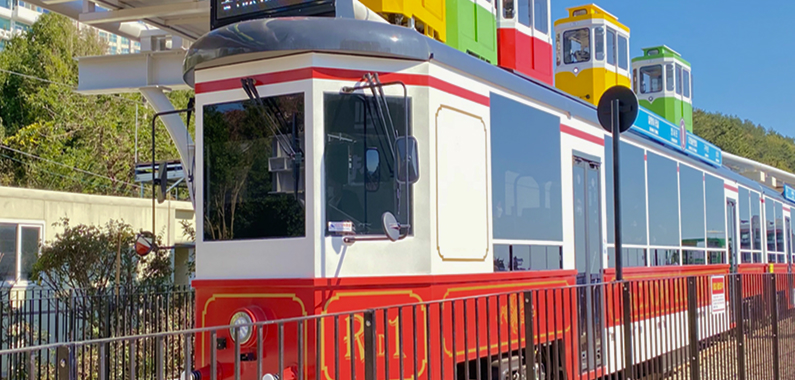

Our Story
바다로 가는 여행,
그 시작은 부산
햇살이 반짝이는 백사장, 마음을 가볍게 하는 파도 소리.
여행이란 단어를 들으면 자연스레 바다가 떠오릅니다.
그리고 그 바다의 중심엔 언제나 부산이 있습니다.
‘바다로부산’은 바다를 사랑하는 사람들을 위해 만들어졌습니다.
해운대의 활기, 광안리의 야경, 송정의 파도, 다대포의 노을까지.
각기 다른 해변이 전해주는 감동을 한곳에 담았습니다.
누구에게나 열려 있는 바다, 누구와 함께여도 좋은 부산.
지금 당신의 바다 여행이 시작됩니다.
바다를 닮은 도시,
이야기가 머무는 곳
누구나 마음속에 하나쯤은 가지고 있는 바다에 대한 로망.
그 바람을 현실로 만들어주는 도시, 바로 부산입니다.
‘바다로부산’은 단순한 여행 정보가 아닌,
부산 바다가 품고 있는 풍경, 이야기, 순간들을 전하고자 합니다.
도심 속 여유, 낙조의 감동, 골목의 온기까지.
당신이 몰랐던 부산의 매력을 찬찬히 전해드립니다.
첫 바다여행을 꿈꾸는 이들에게,
매번 새로운 부산을 발견하고 싶은 이들에게,
‘바다로부산’은 언제나 길잡이가 되어드릴게요.
지금, 바다로 향하는 여정에 함께하세요.
Our Goods
요즘 가장 인기있는 굿즈 BEST3!
-
travel planner
여행 플래너
하루하루 파도처럼 넘기는
나의 여행 페이지 -
magnet
기념 마그넷
기억의 한 조각, 바다로 부산
여행이 끝난 자리에 붙인 기억 -
name tag
캐리어 네임택
SEA you in Busan
바다에서 다시 만나요
부산 바다 가이드
-
송정
-
송정 해수욕장
완만한 수심과 맑은 바다가 어우러진
조용하고 아늑한 분위기의 해변입니다.부산을 대표하는 서핑 명소로, 사계절 내내
서핑을 즐기려는 분들이 많이 찾습니다.해수욕장 인근에는 감성적인 카페와
현지 맛집들이 조화를 이루고 있으며,
자연 속에서 여유를 느낄 수 있어
가족 단위나 연인 분들께도 인기가 많습니다.여름철에는 비교적 한적한 편이라
보다 여유롭게 물놀이를 즐기실 수 있고,해변 산책로와 멋진 바위 해안, 송일정 등
다양한 볼거리도 함께 즐기실 수 있습니다.
-
광안리
-
광안리 해수욕장
얕은 수심과 맑은 바다,
부드러운 모래사장을 갖춘 도심 속 해변입니다.광안대교가 해안을 따라 펼쳐져 있어
아름다운 야경 명소로도 잘 알려져 있습니다.해수욕장 주변에는 다양한 카페와 맛집,
트렌디한 상점들이 즐비해
젊은 세대와 관광객들로 늘 활기가 넘칩니다.여름에는 물놀이와 해변 축제가 열리며,
밤에는 광안대교 조명이 바다 위로 비춰져
한층 더 낭만적인 분위기를 자아냅니다.해변 산책로와 자전거 도로,
해양레저시설도 잘 갖춰져 있습니다.
-
송도
-
송도 해수욕장
매우 완만한 수심과 부드러운 모래로
편안한 해변 분위기를 느낄 수 있습니다.1913년 한국 최초의 공설 해수욕장으로 개장해
역사적인 의미도 큽니다.해변에는 해상 케이블카와 스카이워크가 있어,
넓은 바다와 도심 풍경을 동시에 즐길 수 있습니다.바로 인근에는 회센터, 감성 카페,
로컬 맛집 등이 다양하게 자리해 있으며,
야경이 아름다워 사계절 내내 인기가 많습니다.해양레저시설과 산책로도 잘 조성돼 있어
다양한 즐길 거리를 제공합니다.
-
해운대
-
해운대 해수욕장
넓은 백사장과 아름다운 해안선을 자랑하는
부산의 대표 해변입니다.여름철이면 국내 최대 규모의 피서객이
찾을 만큼 인기가 매우 높습니다.고급 호텔과 고층 빌딩들이 해안선을 따라
늘어서 있어 세련된 분위기를 자아내며,
사계절 내내 활기가 넘칩니다.외국인 관광객에게도 잘 알려져 있으며,
주변에는 동백섬, 오륙도, 아쿠아리움, 요트경기장,
벡스코, 달맞이고개 등 다양한 명소가 가깝습니다.
-
다대포
-
다대포 해수욕장
넓고 평평한 백사장과 얕은 수심이 어우러져
시원하게 탁 트인 바다 풍경을
감상하실 수 있는 해변입니다.특히 갯벌이 드러나는 노을 시간대에는
장관을 이루어 사진가와 커플들에게
인기가 많습니다.사계절 내내 산책이나 드라이브 코스로 사랑받으며,
여름철에는 가족 단위 방문객이 많습니다.인근에는 갈대밭 산책로와 목재 데크,
낙조정 등 잘 조성된 산책 명소가 있으며,
간석지에서는 해양 생태도 관찰하실 수 있어
자연 체험 학습지로도 널리 알려져 있습니다.
바다 근처 가볼만한곳
-
광안리 톤쇼우 본점
톤쇼우 광안점은 광안리 바닷가 경치와 함께
육즙 가득한 ‘일본식 돈카츠’를 즐길 수 있는
핫플레이스입니다.위치 부산 수영구 광안해변로279번길 13 (민락동)
운영시간 11:30 ~ 21:00 (라스트 오더: 20:00)
대표메뉴 버크셔K 로스카츠, 특로스카츠, 히레카츠 -

블루라인파크 해변열차
푸른 해안을 따라 달리는 부산의 명물, ‘해변열차’는
미포에서 송정까지 이어지며 기장 해안선을
색다르게 감상할 수 있는 느긋한 시간 여행을 선사합니다.운행구간 미포 ~ 청사포 ~ 송정
운행시간 09:30 ~ 19:00 (계절별 변동)
탑승장소 미포 정거장 (해운대 미포철길 입구 인근) -
카페 수월경화
송정 해수욕장 맞은편에 위치한 오션뷰 퓨전 티카페입니다.
넓은 통창으로 송정 바다와 해변열차가 지나가는 풍경이
한눈에 내려다보여요. 고즈넉한 분위기 속에서
프리미엄 가향차와 감성 디저트를 즐기기에 딱 좋답니다.위치 부산 해운대구 송정중앙로6번길 188, 4층
운영시간 매일 11:00 ~ 21:00 (연중무휴)
대표메뉴 달보드레 상자, 체리 홍차, 가베 라떼 -
다대포 해변공원
탁 트인 지평선이 펼쳐지는 부산 대표 낙조 명소.
해변 산책로, 분수, 야외무대 등 다양한 시설이
잘 갖춰져 있어 가족 단위 여행객에게도 인기예요.위치 부산 사하구 다대동 일대
운영시간 상시 개방
포인트 노을 시간대 방문 추천, 분수쇼(여름철)
바다로부산 추천코스
요즘 가장 인기있는 여행코스
Loading...